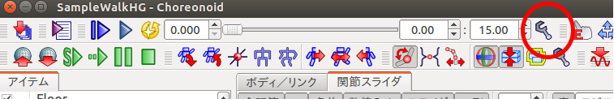
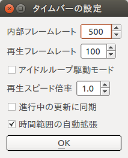
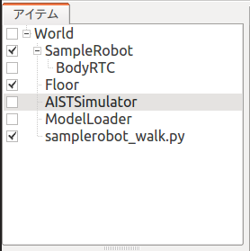

hrpsys-simulatorからchoronoidへ¶
ここでは、hrpsys-simulator用のプロジェクトをchoreonoid用に変換する方法を説明します。 hrpsys-simulatorのサンプルは、下記から入手し、動作確認できるサンプルを使用しました。
http://wiki.ros.org/indigo/Installation/Ubuntu からROSをインストール。
sudo apt-get install ros-hydro-hrpsys-ros-bridge
rtmlaunch hrpsys samplerobot.launch
rosrun hrpsys samplerobot_walk.py
１を選択
準備¶
コントローラRTコンポーネントのファイル(HGcontroller.so)を（choreonoidのインストール先)/lib/choreonoid-1.5/rtcの中に置きます。 Pythonスクリプト(samplerobot_walk.py)は、（choreonoidのインストール先)/lib/choreonoid-1.5/pythonに置きます。
プロジェクトの作成¶
シミュレーションアイテム¶
choreonoidを起動し、アイテムを追加して行きます。ここでは、hrpsys-simulator用のプロジェクトと対応付けて解説します。
1 2 3 4 5 6 | <item class="com.generalrobotix.ui.item.GrxSimulationItem" name="simulationItem">
<property name="integrate" value="true"/>
<property name="timeStep" value="0.002"/>
<property name="totalTime" value="2000000.0"/>
<property name="method" value="EULER"/>
</item>
|
この設定は、シミュレーションアイテムに相当します。前の章の手順に従って、Worldアイテム、AISTSimulatorアイテムを作成します。
AISTSimulatorアイテムは以下の用に設定します：
- 実時間同期:true
- 時間範囲：無制限
- 動力学モード：順動力学、ハイゲイン動力学を選択
- 積分モード：オイラー、ルンゲクッタを選択
シミュレーションの刻み時間は、次のようにして設定します。 図のタイムバーの設定ボタンを押すと、ダイアログが開きます。
 内部フレームレートを変更します。内部フレームレートが500のとき、シミュレーションは1/500(=0.002)秒間隔で実行されます。
モデルアイテムとBodyRTCアイテム¶
1 2 3 4 5 6 7 8 9 10 11 12 13 14 15 16 | <item class="com.generalrobotix.ui.item.GrxModelItem" name="sample1" url="/opt/ros/indigo/share/OpenHRP-3.1/sample/model/sample1.wrl">
<property name="rtcName" value="SampleRobot(Robot)0"/>
<property name="inport" value="qRef:JOINT_VALUE"/>
<property name="outport" value="q:JOINT_VALUE"/>
<property name="WAIST.translation" value="0 0 0.7235"/>
<property name="controller" value="SampleRobot"/>
......
</item>
<item class="com.generalrobotix.ui.item.GrxRTSItem" name="SampleRobot" select="true">
<property name="SampleRobot(Robot)0.period" value="0.002"/>
<property name="HGcontroller0.period" value="0.002"/>
<property name="HGcontroller0.factory" value="HGcontroller"/>
<property name="connection" value="HGcontroller0.qOut:SampleRobot(Robot)0.qRef"/>
<property name="connection" value="HGcontroller0.dqOut:SampleRobot(Robot)0.dqRef"/>
<property name="connection" value="HGcontroller0.ddqOut:SampleRobot(Robot)0.ddqRef"/>
</item>
|
これらの設定は、Modelアイテム、BodyRTCアイテムに相当します。前の章の手順に従って、モデルファイルをロードし、初期姿勢などを設定してください。
BodyRTCアイテムは以下のように設定します：
- 自動ポート接続： false
- RTCインスタンス名： SampleRobot
- コントローラのモジュール名： HGcontroller
- 設定モード: 設定ファイルを使用
- 設定ファイル名： sampleWalkHG.conf
inport,outport,connectionの設定は、設定ファイル名で指定したファイルに記述します。これは後で説明します。 これらのコンポーネントはシミュレーションの実行周期に同期して実行されます。
他に必要なアイテム¶
1 2 3 4 5 6 7 8 | <item class="com.generalrobotix.ui.item.GrxModelItem" name="longfloor" url="/opt/ros/indigo/share/OpenHRP-3.1/sample/model/longfloor.wrl">
<property name="WAIST.translation" value="0 0 -0.1"/>
<property name="WAIST.rotation" value="1 0 0 0"/>
</item>
<item class="com.generalrobotix.ui.item.GrxCollisionPairItem" name="CP#longfloor_#sample1_">
<property name="springConstant" value="0 0 0 0 0 0"/>
<property name="slidingFriction" value="0.5"/>
....
|
床のモデルアイテムも作成してください。 干渉ペアの設定はchoreonoidではありません。基本設定では、全てのモデルが干渉チェックの対象になっています。対象から外したい場合はモデルアイテムの干渉検出プロパティをfalseに設定します。また、モデルの自己干渉を行わないようにする場合は、自己干渉検出をfalseに設定します。摩擦係数の設定は、Simulationアイテムで行います。
更に、メインメニューからpythonスクリプト用に以下のアイテムを作成します。
- ModelLoaderアイテムを作成（ “ファイル” -> “新規” -> “外部コマンド”を選択。名前欄にModelLoaderと入力して、生成）。
- pythonスクリプトアイテムをロード（ “ファイル” -> “読み込み” -> “シミュレーション用Pythonスクリプト”を選択。samplerobot_walk.pyファイルを選択）。
modelファイルとpythonスクリプトファイルにはチェックを入れて、図のような構成にします。
ModelLoaderアイテムは以下のように設定します：
- コマンド: openhrp-model-loader
Pythonアイテムは以下のように設定します：
- バックグラウンド実行: true
作成したプロジェクトは、名前を付けてファイルに保存しておきます。
BodyRTCの設定ファイルの作成¶
BodyRTCアイテムで説明した設定ファイルsampleWalkHG.confを（choreonoidのインストール先)/lib/choreonoid-1.5/rtcに作成します。 hrpsys-simulator用のプロジェクトに記述してあった、inport,outport,connectionの設定を以下の様に記述します。
1 2 3 4 5 6 7 8 9 10 11 12 13 14 15 | in-port = qRef:JOINT_VALUE
in-port = dqRef:JOINT_VELOCITY
in-port = ddqRef:JOINT_ACCELERATION
out-port = q:JOINT_VALUE
out-port = tau:JOINT_TORQUE
out-port = lfsensor:lfsensor:FORCE_SENSOR
out-port = rfsensor:rfsensor:FORCE_SENSOR
out-port = lhsensor:lhsensor:FORCE_SENSOR
out-port = rhsensor:rhsensor:FORCE_SENSOR
out-port = gyrometer:gyrometer:RATE_GYRO_SENSOR
out-port = gsensor:gsensor:ACCELERATION_SENSOR
out-port = WAIST:WAIST:ABS_TRANSFORM
connection = qRef:HGcontroller0:qOut
connection = dqRef:HGcontroller0:dqOut
connection = ddqRef:HGcontroller0:ddqOut
|
RTコンポーネントの設定ファイルの作成¶
rtc.conf ファイルをカレントフォルダに作成します。各RTコンポーネントの設定ファイル(SampleRobot.500.conf)も、ここに置きます。
rtc.confには、以下の様に記述します。
1 2 3 4 5 6 7 8 9 10 11 12 13 | corba.nameservers: 127.0.0.1
naming.formats: %n.rtc
logger.enable: YES
logger.log_level: NORMAL
logger.file_name: stdout
manager.shutdown_onrtcs: NO
manager.is_master: YES
manager.modules.load_path: /usr/local/lib
example.HGcontroller.config_file: SampleRobot.500.conf
example.PDcontroller.config_file: SampleRobot.500.conf
example.SequencePlayer.config_file: SampleRobot.500.conf
example.StateHolder.config_file: SampleRobot.500.conf
example.ForwardKinematics.config_file: SampleRobot.500.conf
|
example.HGcontroller.config_file: SampleRobot.500.conf は、HGcontrollerの設定ファイルがSampleRobot.500.confであることを指定しています。
Pythonスクリプトの修正¶
hrpsys-simulatorで使用したPythonスクリプトは、一部修正が必要です。 例えば、 samplerobot_walk.pyの場合、下の様に黄色で示した５行目を修正、２５，２６行を追加します。
1 2 3 4 5 6 7 8 9 10 11 12 13 14 15 16 17 18 19 20 21 22 23 24 25 26 27 28 29 30 31 32 33 34 35 36 37 38 39 40 | #!/usr/bin/env python
try:
from hrpsys_config import *
import hrpsys.OpenHRP
except:
print "import without hrpsys"
import rtm
from rtm import *
from OpenHRP import *
import waitInput
from waitInput import *
import socket
import time
def getRTCList ():
return [
['seq', "SequencePlayer"],
['sh', "StateHolder"],
['fk', "ForwardKinematics"]
]
def init ():
global hcf
sys.argv = []
rtm.nsport=2809
hcf = HrpsysConfigurator()
hcf.getRTCList = getRTCList
hcf.init ("SampleRobot")
def loadPattern(basename, tm=1.0):
hcf.loadPattern(basename, tm)
hcf.waitInterpolation()
def demo():
init()
loadPattern("/opt/ros/indigo/share/OpenHRP-3.1/sample/controller/SampleController/etc/Sample")
if __name__ == '__main__':
demo()
|
シミュレーションの実行¶
カレントディレクトリから、 choreonoidを起動し、保存したプロジェクトファイルを読み込みます。 シミュレーション実行ボタンを押します。